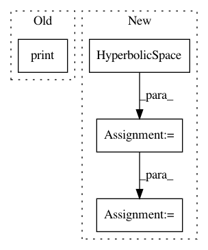

f968d7bec6552b6986731a4dfbb0a524d01a29a2,examples/plot_kmean_poincare_disk.py,,main,#,22
Before Change
Data_Labels = gs.append(Data_Labels, K_means.predict(data))
print("Centroids", Centroids)
visualization.plot(
Centroids,
ax=ax,
After Change
manifold = HyperbolicSpace(dimension=2, point_type="poincare")
metric = HyperbolicMetric(dimension=2, point_type="poincare")
manifold_e = HyperbolicSpace(dimension=2)
metric_e = HyperbolicMetric(dimension=2)
x_b = gs.rand(10,2) * 1/2
x_e = manifold_e.intrinsic_to_extrinsic_coords(gs.rand(10,2))
e = metric_e.dist(x_e, x_e)
b = metric.dist(x_b, x_b+0.1 )
print("b shape", b.shape)
print("e shape", e.shape)
In pattern: SUPERPATTERN
Frequency: 3
Non-data size: 4
Instances
Project Name: geomstats/geomstats
Commit Name: f968d7bec6552b6986731a4dfbb0a524d01a29a2
Time: 2020-01-16
Author: thomas.l.p.gerald@gmail.com
File Name: examples/plot_kmean_poincare_disk.py
Class Name:
Method Name: main
Project Name: geomstats/geomstats
Commit Name: e4a937ea1d0e7dce309a1a3f19d91032aca62781
Time: 2018-04-12
Author: ninamio78@gmail.com
File Name: geomstats/hyperbolic_space.py
Class Name: HyperbolicMetric
Method Name: exp_basis
Project Name: geomstats/geomstats
Commit Name: 0f0356a2e8265f24fd89bf95a809b9a8bb93dede
Time: 2018-04-12
Author: ninamio78@gmail.com
File Name: geomstats/hyperbolic_space.py
Class Name: HyperbolicMetric
Method Name: exp_basis